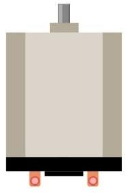
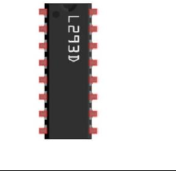
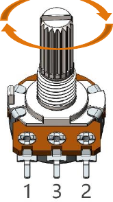

ESP32-S3 board
The brain that runs your uploaded sketch.
ESP32-S3 Lab · Day 22 of 30
Today the board moves something. A knob sets the plan, three small signals carry it to the L293D driver chip, and the chip switches a 9V battery's current through a DC motor — the load a bare GPIO pin could never carry itself. Sweep the knob and the shaft speeds up, slows, stops at centre, and spins the other way.
TSK-DAY22-MOTOR
Hand this to an agent so it can pull the lesson packet and coach you step by step.
01 First, know the pieces
Six pictured parts plus one you supply yourself — a 9V battery. Freenove leaves the battery out of the box, so have a fresh one ready along with the kit's battery line (the clip-on lead that reaches the extension board). Tap Define on any part you haven't met — the answer opens as a field note you can read and dismiss without losing your place.
The brain that runs your uploaded sketch.

Spreads the pins into rows — and carries the battery's power today.

The part that moves — current through its two terminals spins the shaft.

Takes the board's small signals and switches the battery's current.

The knob — one sweep sets both speed and direction.

Temporary, solder-free connections.
02 Make the physical circuit
The official Freenove diagram is your chart — schematic on top, the same circuit built on a breadboard below. Click it to enlarge. More wires than usual today, so take the connections one row at a time.
Power the motor from the battery only. Freenove's warning is direct — powering the motor from the ESP32-S3 directly "may cause permanent damage to your ESP32-S3". Even spinning free, this motor draws about 0.2–0.3 A, far past what the board can supply. Connect the 9V battery to the extension board's power terminal and let it carry the motor.
Share one ground. An external supply must share a common ground with the board — the extension board's power terminal does this for you when it's wired as charted. Unplug USB before you move any wire.
03 One action at a time
This is the main path — you can finish the day without opening a single field note. Tap each step as you go to keep your place.
Keep USB unplugged, seat the ESP32-S3 on the GPIO extension board, and set the 9V battery aside until the wiring is checked.
Press the L293D into the breadboard so its notch faces the same way as the chart — the chip only works one way round.
Wire the direction pins — In1 → GPIO 13 and In2 → GPIO 14.
Wire the speed pin — Enable1 → GPIO 12.
Connect the motor's two terminals to the chip's Out1 and Out2.
Wire the potentiometer — outer pins to 3.3V and GND, middle pin to GPIO 1.
Clip the battery line onto the 9V battery and connect it to the extension board's power terminal, minding + and −.
Compare every wire to the chart — this is the day to be fussy about it — then plug in USB.
Open Sketch_16.1_Control_Motor_by_L293D.ino in Arduino IDE and upload it.
Switch on the extension board's power and sweep the knob slowly from end to end.
04 Read just enough code
One sketch, three jobs — read the knob, work out speed and direction from the centre point, and hand both to the driver chip. Switch to MicroPython if you'd rather see the same idea in Python — the wiring never changes.
int in1Pin = 13; // Define L293D channel 1 pin
int in2Pin = 14; // Define L293D channel 2 pin
int enable1Pin = 12; // Define L293D enable 1 pin
int channel = 0;
boolean rotationDir; // Define a variable to save the motor's rotation direction
int rotationSpeed; // Define a variable to save the motor rotation speed
void setup() {
Serial.begin(115200);
pinMode(in1Pin, OUTPUT);
pinMode(in2Pin, OUTPUT);
pinMode(enable1Pin, OUTPUT);
ledcAttachChannel(enable1Pin, 1000, 11, channel);//Set PWM to 11 bits, range is 0-2047
}
void loop() {
int potenVal = analogRead(A0); // Convert the voltage of rotary potentiometer into digital
if (potenVal > 2048)
rotationDir = true;
else
rotationDir = false;
// Calculate the motor speed
rotationSpeed = abs(potenVal - 2048);
Serial.println(rotationSpeed);
delay(100);
driveMotor(rotationDir, constrain(rotationSpeed,0,2048));
}
void driveMotor(boolean dir, int spd) {
// Control motor rotation direction
if (dir) {
digitalWrite(in1Pin, HIGH);
digitalWrite(in2Pin, LOW);
}
else {
digitalWrite(in1Pin, LOW);
digitalWrite(in2Pin, HIGH);
}
// Control motor rotation speed
ledcWrite(enable1Pin, spd);
}analogRead(A0)Reads the knob. A0 is this board's alias for GPIO 1 — the same pin your wire lands on. ledcAttachChannel(enable1Pin, 1000, 11, channel)Sets up PWM on the enable pin at 11 bits, so speed runs from 0 to 2047. rotationSpeed = abs(potenVal - 2048)Speed is the knob's distance from centre; which side of 2048 it sits on picks the direction.ledcWrite(enable1Pin, spd)Hands the speed to the chip — more on-time on Enable1 means more push through the motor. Optional side path · same circuit
in1Pin=Pin(13, Pin.OUT)
in2Pin=Pin(14, Pin.OUT)
enablePin=Pin(12, Pin.OUT)
pwm=PWM(enablePin,10000)
adc=ADC(Pin(1))
try:
while True:
potenVal = adc.read()
if (potenVal > 2048):
rotationDir = 1;
else:
rotationDir = 0;
rotationSpeed=int(math.fabs((potenVal-2047)//2)-1)
driveMotor(rotationDir,rotationSpeed)
time.sleep_ms(10)pwm=PWM(enablePin,10000)PWM on GPIO 12 at 10 kHz with a 10-bit duty (0–1023) — the same idea as Arduino's 0–2047 on a smaller scale.adc=ADC(Pin(1))Reads the knob straight from GPIO 1 — the pin the Arduino sketch calls A0.Same wiring, same centre-zero knob. MicroPython's duty is 10-bit, so its speed formula halves the distance from centre to fit the 0–1023 range — different numbers, identical behaviour. Run it in Thonny if MicroPython is set up; otherwise skip it — it should never block the Arduino-first path.
05 Understand, don't memorise
A GPIO pin is a messenger. It can say a lot, and it can carry almost nothing. Today's chip is the porter that carries the load the message describes — and it is the first day the board commands real power instead of a single LED.
A GPIO pin carries meaning on a trickle of current, a few milliamps at a delicate 3.3 volts. This motor wants 0.2 to 0.3 amps just to spin free — hundreds of times more than the pin can give.
A spinning motor is also a small generator, and switching its current makes it kick back a voltage spike. That current draw and that kickback, fed straight into a GPIO pin, would damage the chip.
The L293D runs from the motor's own 9V battery. It takes the pin's small signal and uses it to switch that heavy current, so the delicate logic and the motor's power stay on separate wires.
Inside sit four switches that route the battery through the motor one way or the reverse. In1 and In2 pick which pair closes, so the same motor spins forward or back with no rewiring.
Enable1 gates the bridge. A PWM signal there switches it on and off thousands of times a second, and the share of on-time is how hard the motor drives.
small signal + the chip's own battery = real motion · direction from which way current runs · speed from PWM duty
The 9V battery moves the motor; USB feeds the board. The two supplies only agree on what HIGH and LOW mean because they share a ground on the extension board — that shared wire is what lets the chip read the board's signals.
A DC motor spins the other way the moment its current reverses. The H-bridge does exactly that on command, so direction is a matter of which two switches close — never a second motor or a gearbox.
06 Know it worked
The proof today is the spinning shaft in front of you — Serial Monitor backs it up with a live speed number.
Expect a small still zone either side of centre — a motor needs a push of current before it beats its own friction, so the first sliver of knob travel does nothing. Today's challenge puts a number on exactly that.
07 Make the idea yours
Same working circuit, two experiments that tie what you see the shaft do back to the three signals driving it. Both fit inside today's 30 minutes.
Add a Serial print of rotationDir next to the speed number, upload, and open Serial Monitor. Sweep the knob slowly from one end to the other. At centre both numbers fall to zero and the shaft stops. Cross centre and the direction flag flips — that is In1 and In2 swapping — and the shaft reverses. The further you turn, the higher the speed number Enable1's PWM carries, and the faster it spins. Every one of the three control pins is now visible in what the motor does.
Creep the knob out from centre while watching Serial Monitor, in both directions. Note the number on screen the moment the shaft first turns — that is the push this motor needs to beat its own friction, the current floor below which the signal is real but the shaft stays still.
08 Learn it with a hand on the tiller
Every lesson ships with a code and a machine-readable packet, so an agent can guide you with full context.
TSK-DAY22-MOTOR
How the agent should behave: guide one physical connection at a time, wait for you to confirm, keep the 9V-battery rule front and centre, and explain the driver as the porter that carries current a GPIO pin never could — direction from the H-bridge, speed from PWM. Always check wiring, power, board, and port before changing code.